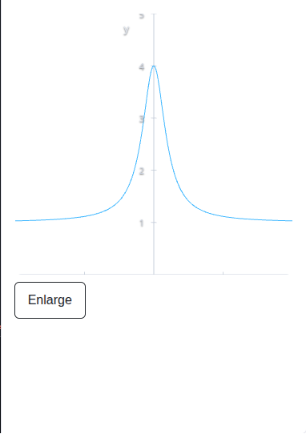

A language experiment for scientific work.
Vektor Flow explores a language without keywords, seeking readable ways to express calculations and the relationships behind them.
Aimed at scientists and mathematicians, it pursues convenience without sacrificing performance, with fast figure and PDF article generation built in as a goal.
From language design to calculation and visualization.
The project began with the keywordless-language experiment and grew through years of experience in data engineering and visualization. That background informs a design that connects functions, named dimensions and views.
CONNECTED CONCEPTS
Keep the calculation and its context together.
Give each calculation a boundary.
Evaluate a scope directly, or reuse a function with named, variadic or bound arguments. Scopes support encapsulation; scopes and structs with overriding form the object model.
Scopes and reusable functions →Express the relationship between axes.
Vectorization and automatic broadcasting carry calculations across compatible dimensions. Name the axes a function consumes and keep the others in its result.
Work with axes →Make the next step explicit.
Guard clauses encourage clear control flow; there is no else construct. Transparent event matching, ??>, reduces callback logic, while named indices can also guide UI projections.
The calculation below brings scopes, dimensions and a view together: generate spectra, compare their contrast, then inspect one curve. Edit the source and choose Run to recalculate.
WHAT YOU CAN TRY
Which site has the strongest contrast?
Four generated Lorentzian spectra. Calculate contrast on 257 energy samples per site, then inspect site 2 on a denser 513-sample curve.
Run the program, then change selected_site: 2 to selected_site: 1 and run again. The output and curve update from the edited source.
[0.99009900990099, 1.98019801980198, 2.97029702970297, 3.96039603960396] 4

Run to plot a generated Lorentzian spectrum. These are synthetic data, not measurements.
Generated, in-memory data; no file access or performance claim. Complete equivalent Python program →